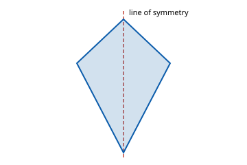
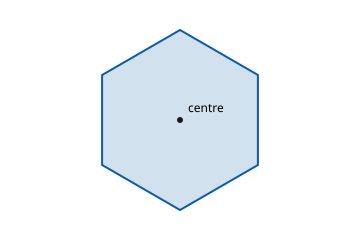

<script>if(location.hostname.endsWith('onrender.com'))location.replace('https://math-sandbox.github.io'+location.pathname+location.search+location.hash)</script>
<section class="theory" data-section="IGCSE-19.1">
<h2>19.1 Symmetry in two dimensions</h2>
<p class="src">Based on Cambridge IGCSE Mathematics Core and Extended Coursebook (Karen Morrison and Nick Hamshaw), Chapter 19. The wording is original and follows the published section titles and the standard Cambridge IGCSE treatment of the topic. Printed pp.643–648.</p>
<p class="key-words"><strong>Key words:</strong> <em>line of symmetry</em>, <em>rotational symmetry</em>, <em>order of rotational symmetry</em></p>
<h3>Line symmetry</h3>
<p>A two-dimensional shape has a <strong>line of symmetry</strong> (also called a mirror line) if the line divides the shape into two parts that are mirror images of each other. A reflection in that line leaves the shape looking the same. A rectangle has two lines of symmetry, a square has four, an isosceles triangle has one, and a kite typically has one line of symmetry, along the diagonal that joins the two vertices at which the equal sides meet. That diagonal is the perpendicular bisector of the other diagonal.</p>
<figure><figcaption>A kite and its line of symmetry.</figcaption></figure>
<div class="ms-widget" data-widget="reflection-symmetry-2d"></div>
<script src="../../assets/widget-kinds-pkg14.js"></script>
<h3>Rotational symmetry</h3>
<p>A shape has <strong>rotational symmetry</strong> about a point if it looks the same after a rotation of less than one full turn about that point. The <strong>order of rotational symmetry</strong> is the number of times the shape looks the same in a full turn of \(360^\circ\), including the original position. A regular hexagon has rotational symmetry of order \(6\), and each smallest rotation is \(360^\circ\div 6=60^\circ\). A shape with no rotational symmetry other than a full turn has order \(1\).</p>
<figure><figcaption>A regular hexagon has rotational symmetry of order \(6\).</figcaption></figure>
<div class="worked-example">
<h4>Worked example 1: Lines of symmetry of a rectangle</h4>
<p class="src">Coursebook, 19.1, style of the polygon-symmetry examples. A standard rectangle that is not a square.</p>
<p>How many lines of symmetry does a rectangle that is not a square have? Describe them.</p>
<ol class="steps">
<li>A rectangle that is not a square has two lines of symmetry: the line joining the midpoints of the longer sides, and the line joining the midpoints of the shorter sides. <span class="mark">B1</span></li>
</ol>
<p class="final"><strong>Answer:</strong> \(2\); the two lines through the midpoints of opposite sides.</p>
</div>
<div class="worked-example">
<h4>Worked example 2: Order of rotational symmetry</h4>
<p class="src">Coursebook, 19.1, regular-polygon style. New shape: a regular pentagon.</p>
<p>State the order of rotational symmetry of a regular pentagon, and the smallest angle of rotation that maps the pentagon onto itself.</p>
<ol class="steps">
<li>A regular pentagon has five equal sides, so the order is \(5\). The smallest angle is \(360^\circ\div 5=72^\circ\). <span class="mark">B1</span></li>
</ol>
<p class="final"><strong>Answer:</strong> order \(5\); \(72^\circ\)</p>
</div>
<h3>Common mistakes</h3>
<ul>
<li>Counting only the “upright” line of symmetry of a square and missing the two diagonals, or counting both diagonals of a non-square rectangle (which are not lines of symmetry).</li>
<li>Giving the order of rotational symmetry as the smallest angle, or as \(360^\circ\), instead of the number of positions in a full turn.</li>
</ul>
<h3>Past paper</h3>
<p>There is no whole past-paper question on this subsection alone.</p>
<div class="quick-check">
<h4>Quick check 1</h4>
<p>State the order of rotational symmetry of a regular quadrilateral (a square).</p>
<details><summary>Worked solution</summary>
<ol class="steps"><li>A square looks the same in four positions in a full turn, so the order is \(4\).</li></ol>
<p class="final"><strong>Answer:</strong> \(4\)</p>
</details>
</div>
<div class="quick-check">
<h4>Quick check 2</h4>
<p>How many lines of symmetry does a regular hexagon have?</p>
<details><summary>Worked solution</summary>
<ol class="steps"><li>A regular hexagon has six lines of symmetry (three through opposite vertices and three through the midpoints of opposite sides).</li></ol>
<p class="final"><strong>Answer:</strong> \(6\)</p>
</details>
</div>
<div class="quick-check">
<h4>Quick check 3</h4>
<p>What is the smallest angle of rotation, in degrees, that maps a regular octagon onto itself?</p>
<details><summary>Worked solution</summary>
<ol class="steps"><li>\(360^\circ\div 8=45^\circ\).</li></ol>
<p class="final"><strong>Answer:</strong> \(45\)</p>
</details>
</div>
</section>
